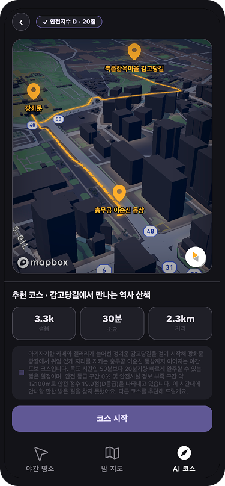

01
뚜벅뚜밤
위치 기반 서비스의 앱과 서버를 개발하고 AWS에 배포했습니다. 코드를 수정할 때마다 수동으로 배포하지 않도록, GitHub → CodeBuild → ECR → CodeDeploy로 이어지는 자동 배포 환경도 구성했습니다.
데이터 분석부터 프론트엔드, 백엔드, AI 모델링, 배포까지 직접 합니다.
서강대학교에서 중국문화학과와 컴퓨터공학을 함께 전공하고 있습니다.
학회와 부트캠프를 통해 데이터 분석을 시작으로 웹/앱과 서버 개발, AWS 배포도 경험했습니다.

위치 기반 서비스의 앱과 서버를 개발하고 AWS에 배포했습니다. 코드를 수정할 때마다 수동으로 배포하지 않도록, GitHub → CodeBuild → ECR → CodeDeploy로 이어지는 자동 배포 환경도 구성했습니다.
수주 현황을 엑셀로 관리하던 담당자가 파일을 올리면 표와 그래프로 확인할 수 있는 사이트를 만들고 있습니다. LG전자 산학협력 과제로, 저는 실무 담당자와 필요한 기능을 정리하는 일을 맡고 있습니다. 2026년 9월 말 중간 보고를 앞두고 있습니다.
시변 Cox 모델과 scikit-survival의 RSF(Random Survival Forest)로 생존 확률을 분석해, 골목 상권의 침체를 데이터로 미리 진단하는 창업 아이디어입니다.
수상: 제17회 서강대학교 스타트업 오디션 장려상 · 제13회 빅콘테스트 AI·데이터 분석분야 최우수상(신한카드 시상) · 2025년 서강 융합기술 경진대회 우수상
리그 오브 레전드 초보자를 위한 교전 영상 분석 웹서비스. YOLOv8로 영상 속 챔피언 위치와 체력바를 추적하고, RAG와 LLM으로 상황에 맞는 코칭 피드백을 생성합니다. PM과 Vision, 프론트엔드를 맡았습니다.
부서별 업무 매뉴얼을 RAG용 데이터로 가공하고, 답변 검증에 쓸 질문–답변 세트를 설계합니다. 서비스 UI/UX 개선안도 작성하고 있습니다.
ML, DL, LLM, RAG, Agent에 대한 수강생 질의응답과 AI 서비스 피드백을 담당했습니다.
파이썬 기초 문법 질의응답을 담당했고, 간단한 Pandas·NumPy 내용도 다뤘습니다.
제13회 빅콘테스트 AI·데이터 분석분야, 팀 '인사이트'.
HTML·CSS·JavaScript 기초 문법과 Flask 웹 서빙에 대한 질의응답을 담당했습니다.
통계, 데이터 분석, 머신러닝, 딥러닝, LLM 등을 공부하고, 금융 데이터를 분석하는 프로젝트를 수행했습니다.
6개월 동안 머신러닝·딥러닝·LLM을 배우고, 풀스택 개발과 AWS 기반 데이터 파이프라인 구축·배포를 실습했습니다.
중국문화학과로 입학해 컴퓨터공학을 복수전공하고 있습니다. 학과 부학생회장으로도 활동했습니다.